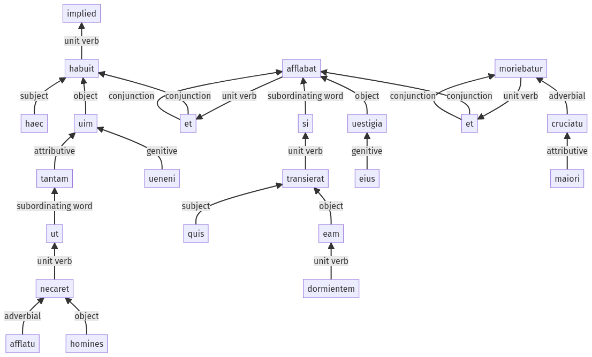

Hyginus, Fabuleer, 30pr.3.12-30pr.3.33a
30pr.3.1-30pr.3.11a | 30pr.3.34-30pr.3.45a
Sentence 416
30pr.3.12-30pr.3.33a
haec tantam uim ueneni habuit ut afflatu homines necaret, et si quis eam dormientem transierat, uestigia eius afflabat et maiori cruciatu moriebatur.
1 haec tantam uim ueneni habuit
2 ut afflatu homines necaret
1 et
2 si quis eam
2 dormientem
2 transierat
1 uestigia eius afflabat
1 et maiori cruciatu moriebatur
haec tantam uim ueneni habuit ut afflatu homines necaret, et si quis eam dormientem transierat, uestigia eius afflabat et maiori cruciatu moriebatur.
Highlighting:
- connecting words
- unit verb
- subject
- object
Color code:
- independent clause (level 1, transitive verb)
- independent clause (level 1, transitive verb)
- independent clause (level 1, intransitive verb)
- subordinate clause (level 2, transitive verb)
- subordinate clause (level 2, transitive verb)
- participle (level 2, transitive verb)
